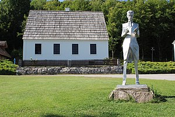
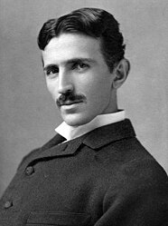

Budući izumitelj svjetske slave pohađao je njemačku osnovnu školu u Smiljanu, a istu je završio u Gospiću. Nakon toga upisao se u Nižu realnu gimnaziju u Rakovcu kod Karlovca. Slobodno je vrijeme najviše volio provoditi s prijateljima. No, uživao je i u hvatanju ptica (ljubav prema pticama pratit će ga čitav život) i čitanju. U vrijeme puberteta volio se kartati ali tako zarađeni novac nikada nije nosio kući već ga je poklanjao drugima. Nakon završetka gimnazije dvije se godine nije školovao. Roditelji su na Nikolu vršili pritisak da postane svećenik ali on se tome protivio i upisao se na studij tehničkih znanosti u Grazu. Na Visoku tehničku školu u Grazu upisao se 1875. Prvu je godinu primao stipendiju Vojne krajine, a druge je godine stipendija izostala jer je Vojna krajina bila razvojačena. Zamolio je 1876. i 1878. stipendiju Matice srpske u Novome Sadu, ali ju nije dobio. Početkom 1880. otišao je u Prag u želji da nastavi studij, ali nema podatka da je završio studij na kojem od sveučilišta. Tijekom studija upoznao se s Voltaireovim djelima te je odlučio pročitati sve što je ovaj napisao. U konačnici je pročitao sva njegova djela, ali ne samo to nego ih je i naučio napamet. Nakon završetka studija zaposlio se u telefonskom društvu i priključivao telefone po kućama u naredne dvije godine.

